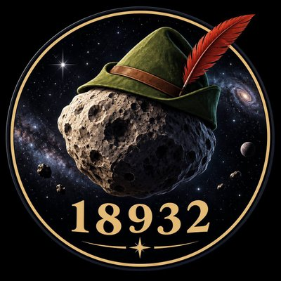

heliocentric view · ecliptic plane · drag to pan · scroll to zoom
SIMULATION DATE—
30 d/s

$RH-18932
RH-18932 / EARTH
18932 Robinhood (2000 QH35) · main-belt asteroid · proximity pair
— AU
—
▼—
Distance to Earth
—
low —high —
Next close approach (4-yr scan)
—
Perihelion
—
Aphelion
—
Orbital period
—
Heliocentric dist.
—
Orbital speed
—
Eccentricity
—
Orbital elements
All six elements are from the JPL Small-Body Database, orbit solution 60,
epoch JD 2461200.5 (equinox J2000). Look it up yourself:
JPL SBDB
·
Minor Planet Center.
Edit any value and everything recalculates live.
Look up 18932 Robinhood at the
JPL Small-Body Database
or the
Minor Planet Center.
Two-body Keplerian propagation. Inner planets use J2000 mean elements; positions are
illustrative, not ephemeris-grade. Green means the rock is closing on Earth. Not financial advice,
not planetary-defense advice.